1.首先在开启页面设置审核级别,例如设置为3时,稿件的审核阶段就包括:初审、二审、终审.
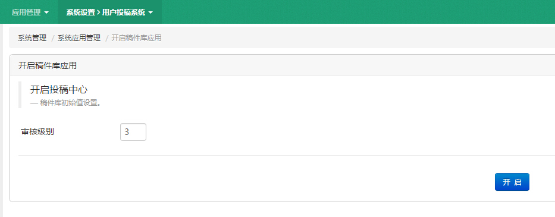
2.添加各个审核级别角色,各个级别角色都要勾选投稿系统权限,需注意终审管理员需要有管理站点的权限,方便将终审稿引用到相应站点
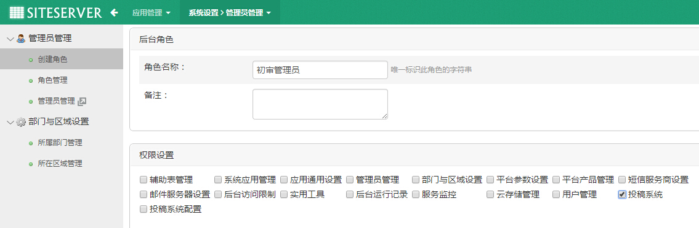
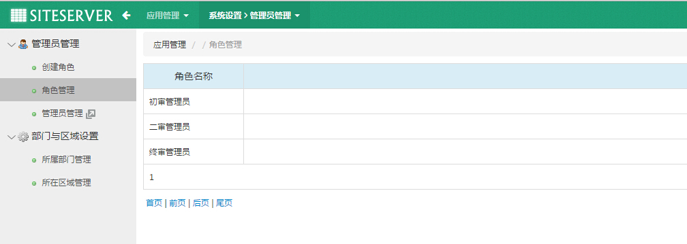
3.为各个角色添加管理员.
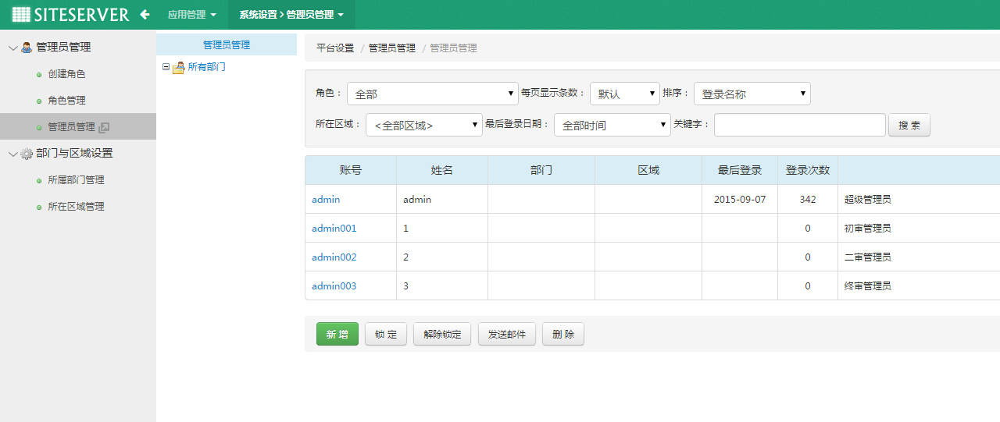
4.打开投稿系统>系统配置>分类管理,添加分类
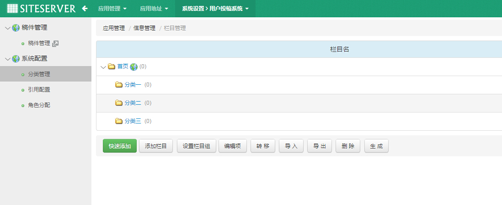
5.打开角色分配,为对应的角色分配审核级别权限和栏目权限
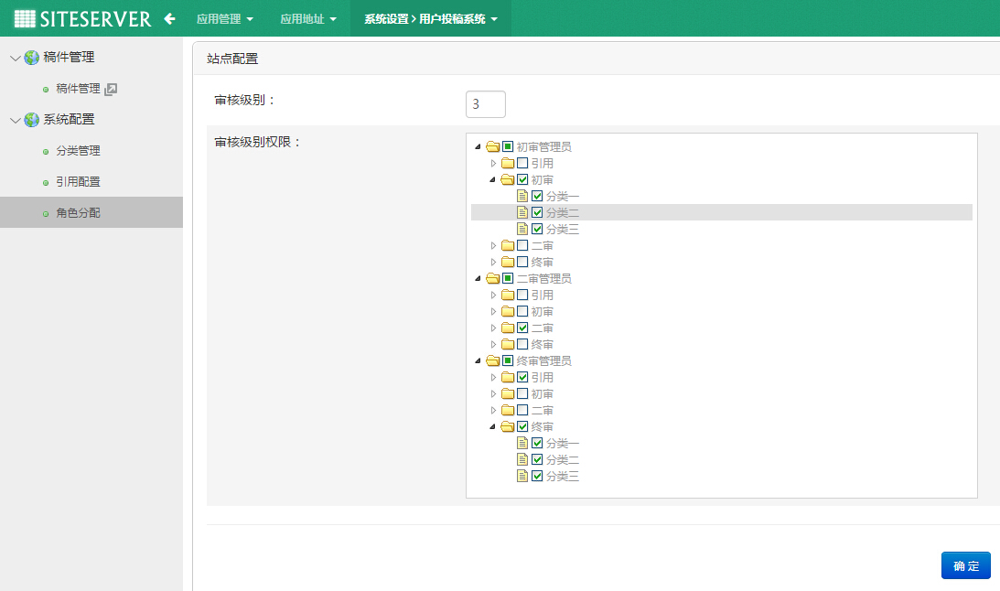
6.如果需要记录引用到第三方的稿件(当前版本需要手动复制),则打开引用配置,添加引用方,比如:腾讯微博,新浪微博...
至此配置工作完成.下面是流程实例
1.用初审管理员账号登陆投稿系统,添加初审稿件.或以前台用户登陆前台用户中心,打开投稿中心投稿.
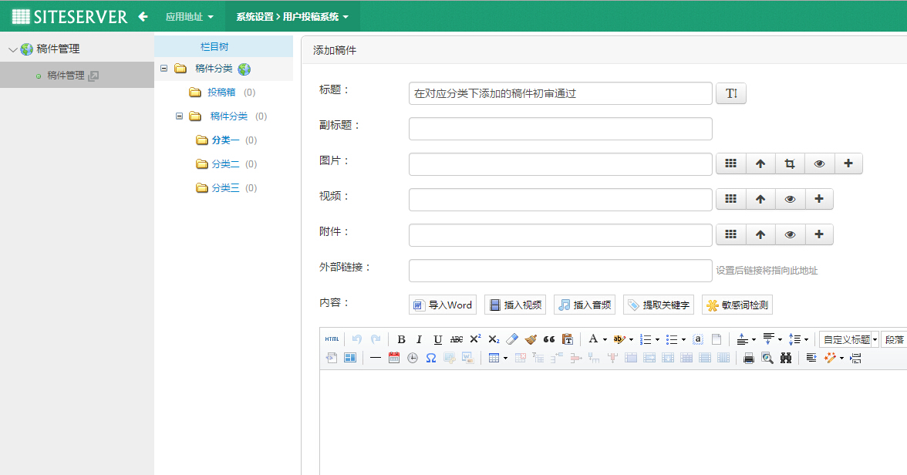
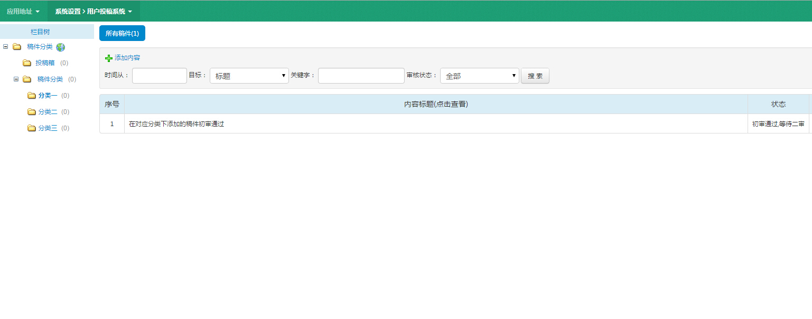
2.登陆二审管理账号,审核"初审通过,等待二审"稿件
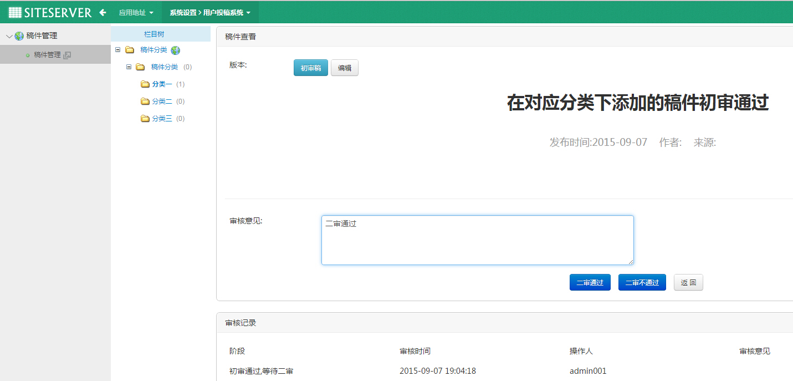
3.登陆终审管理账号,审核"二审通过,等待终审"稿件
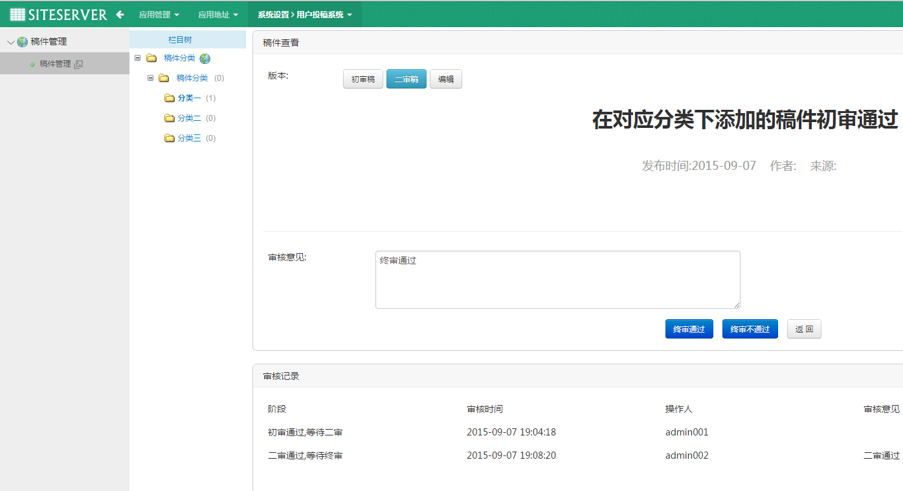
4.查看所有稿件,在"终审通过"稿件点击"引用",选择站点栏目.将终审通过的稿件引用到其他站点
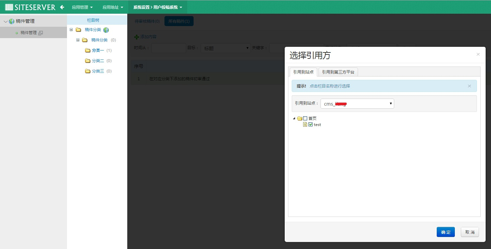
5.后台添加稿件审核流程到引用完成
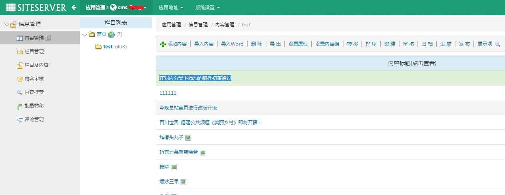